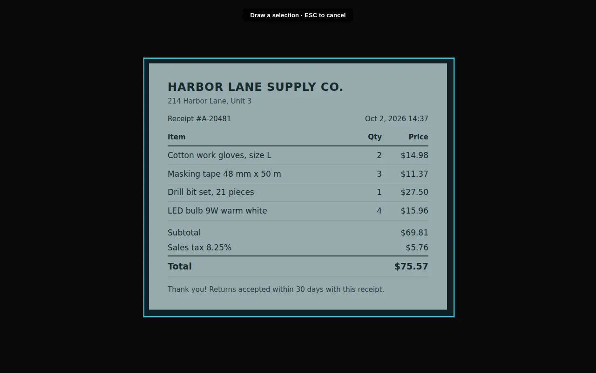
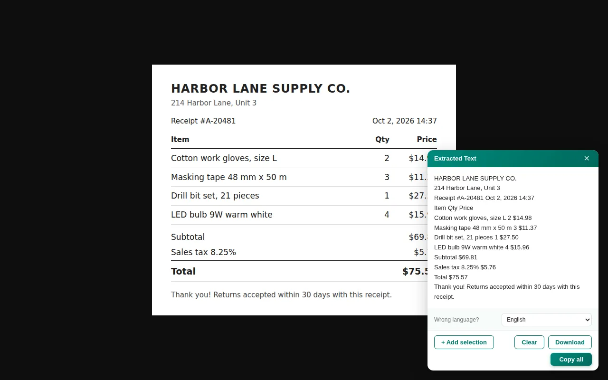

How to copy text from an image on a PC or Chromebook
You have a picture or a screenshot with text you need, and right-clicking only offers to save or copy the whole image, never the words. Windows 11 and ChromeOS now have built-in ways to read that text. Below is how each one works, and a test of our free extension on a real receipt so you can see what to expect.
The quick answer
- Windows 11: Snipping Tool, Text actions, Copy all text.
- Chromebook: Google Lens, built into the launcher and the screen capture tool.
- Chrome on any PC, without sending the image anywhere: Extract Text from Image, a free extension that reads the text on your device.
On Windows 11: Snipping Tool
- Press
Windows+Shift+Sand select the area with the text. To use a picture you already have, right-click the file and choose Open with, then Snipping Tool. - Open the snip in Snipping Tool and click Text actions in the toolbar.
- Click Copy all text, or highlight part of it and press
Ctrl+C.
It needs a recent Snipping Tool (version 11.2308.33.0 or newer, from the Microsoft Store). The Photos app can also select text in an image. Microsoft PowerToys adds Text Extractor on Windows + Shift + T, but that's a separate install aimed at power users.
On a Chromebook: Google Lens
- Open Screen capture and choose Take partial screenshot, or press the Launcher key and select Lens.
- Drag over the text.
- Select Search with Google, then Copy text. The button only appears when Lens finds text.
Two things to know: Google has to be your default search engine, and the selected area is sent to Google to be read. Full walkthrough with the PDF case: how to copy text from an image on a Chromebook.
In Chrome on any PC: Extract Text from Image
The extension works the same on Windows, Mac and ChromeOS, and the text recognition runs on your computer, so the image is not uploaded anywhere.
- Open the page with the image in Chrome.
- Click the extension icon, then Start selection.
- Drag a box over the text.
- Click Copy all, or Download to save it as a .txt file. + Add selection grabs another area without starting over.


For a picture saved on your PC or a screenshot you just took, use the Upload File tab in the extension: choose the file, drag it in, or paste it with Ctrl + V. A file dragged straight into a Chrome tab opens as a local file, and the selection doesn't work there.
Copy text from any image
Works the same on Windows and ChromeOS. Free, on-device.
Add to Chrome · freeOur test: a receipt and a slide
We ran the extension on two images: the receipt above and a presentation slide with numbers.
- Receipt: 66 words, 0 errors, the same result in all 6 runs. Prices, the date and the receipt number came out exactly.
- Slide: 1 error in 50 words, the same every time: “0.7” came out as “O.7”, a zero read as the letter O. Check digits that sit next to letters before you paste them into a spreadsheet.
- Speed: the very first read after installing took about 15 seconds, because the recognition engine starts up. After that, about 4 seconds; after restarting the browser, about 7. That was on a small 2-core test machine; a normal PC is usually faster.
What the built-in tools don't do
- Several areas into one text. Snipping Tool and Lens read one area at a time. + Add selection in the extension adds the next area to the same text, so a long page or a few screenshots end up in one place.
- Save as a file. Download gives you a .txt file; the built-in tools only copy to the clipboard.
- Any system. Text actions in Snipping Tool is a Windows 11 feature. The extension works in Chrome on Windows 10, Windows 11, Mac, Linux and ChromeOS.
- Pick the alphabet. If the result looks wrong, Wrong language? lets you switch to another script (Latin, Cyrillic, Greek, Arabic, Chinese, Japanese, Korean and others) and read the same area again.
- The image stays with you. Lens sends the selected area to Google. The extension reads it on your computer.
Which one to use
For a one-off on Windows 11, Snipping Tool is already there and also reads the text on your PC. On a Chromebook, Lens is the fastest if you don't mind the image going to Google. The extension is worth it when the image is already open in Chrome, when you do this often, or when the picture holds something you'd rather not send anywhere, like an ID or a bank screenshot. See how it handles screenshots and photos of documents, or compare OCR Chrome extensions.
If the file is a PDF, not an image
Copying from a PDF has its own traps: the text is selectable but the table falls apart the moment you paste it. A converter that keeps the grid solves it in one step, on Mac as well as Windows, and it is the reason people look for a Smallpdf alternative.